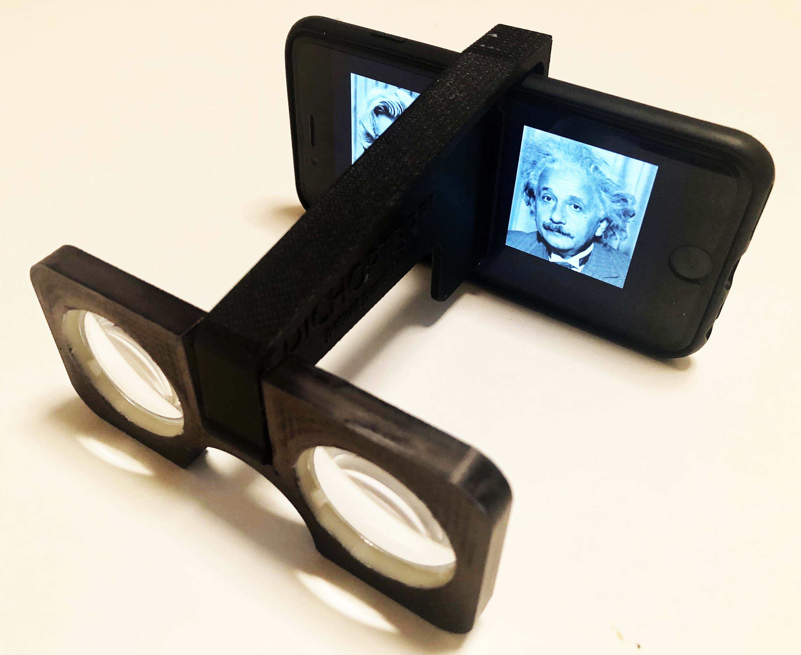

Dichopter® Viewer
The Dichopter® software has been designed for viewing on a smartphone. In order to view the separate image pairs, a viewer has been designed called the “Dichopter”. This viewer should be able to accommodate most smartphone sizes and formats. It is shown below attached to an Apple iPod. It slips on and off easily without scratching the phone screen and holds the two separate magnifying lens in place for parallel viewing of images.
